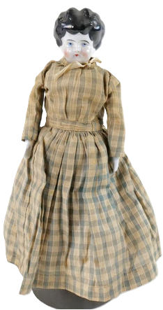

This page was last modified EST.
(mockingbird)
Linda didn't know much about birds but she was learning and Aunt Nell had helped spark her interest.
(red bird)

Aunt Nell could laugh like bells chiming. Her smile was slow and sweet. Then too, she could tell the most marvelous stories. How Linda loved to hear about her trips on trains, on boats, and across the states.
(bells)
(train)
The nice things she brought made Linda and her sisters look forward to her coming. Sometimes there would be dolls or doll dresses. Once there were hair ribbons for all the girls. Linda sould always remember the time she brought her a doll with a china head and the body stuffed with saw dust.
